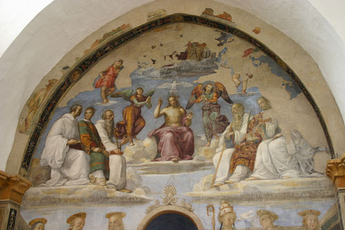

Perugia, One Night

Raphael in the Chapel of San Severo
It was raining and cold when Simon and I disembarked in Perugia. With hangover quieted by a nap lulled by the train, lunch was our priority after checking into the hotel. The hotel, recommended by a friend, saw us on the top floor looking out over the edge of Perugia’s terracotta rooftops, onto Umbria’s undulant roll. The tarpaulin on the medieval tower billowed in the wind, and it began to snow. Lots of snow, but not sticking. That heavy, splotchy wet kind.
Lunch also came by recommendation. The woman at the hotel sent us a short way down the road (thank goodness!) to Osteria A Priori. There was a line. Whatever. We’ll wait. And good thing we did. If you’ve eaten truffles before they were probably out of a jar and a concentrate—they might have left a strong taste in your mouth and had a strong smell. If you’ve had truffles fresh out of the earth, then you know they are a different thing entirely. We both ate the strangozzi con tartuffi, and it was amazing. I don’t even think the truffles were cooked but shaved on top and warmed by the pasta. The subtlety of it, the light drizzle of oil, a sprinkle of sea salt, developed with every bite. After our pasta, dessert, wine, we went to sleep.
For dinner we weren’t so lucky. It’s really one of the pitfalls of traveling, the searching for a restaurant, the wariness and passing on, always on the look out for the next one that looks better. We passed a few decent places, but I felt like walking, having slept most of the afternoon, so we walked on. We decided on a restaurant that we passed earlier—La Lanterna. Just walking into the entry it was apparent, yet we still sat down. No one else was there. An odor of stale grease clung to the air. The walls were covered in cheap reproductions, the table linens were tacky, and dance music pulsed in the space where there should have been voices.
We ordered: a sliced meats plate, lamb for the entree. The sliced meats arrived, fresh from the supermarket refrigerator. Even in Grand Rapids last month I ate better prosciutto. We couldn’t even finish something so tasteless. We asked to cancel the order. The waiter ran out and down to the kitchen and said it was too late, the lamb was in the oven. Whatever. We’re still going. “Just wait,” he said. “We’ll wrap it up for take away.” We paid for the horrible food and the freedom to leave—so happy to be back in the streets.
After that, any food was great. The bar that followed dinner, Trottamundo Kafé Libreria, topped the night with too much Sagrantino.
The next morning, rain clouds and sun oscillated so frequently that the sky seemed the most indecisive partner. It was snowing when we entered the Chapel of San Severo to see the Raphael, then sunny when we came out. Raining on the way to the Etruscan Well, snowing with sun by the time we saw it and came out. We also ducked into the Collegio di Cambio for the frescos by Perugino. Though the Raphael was of course the most beautiful for its softness of form, Perugino wasn’t his master for no reason. Usually frescoes stretch out over tall ceilings and walls, but those in the Collegio di Cambio were accessible and compacted and interesting for the mix of Christian, Jewish and Pagan.
For our last supper we ate again at A Priori, not willing to take the risk of another restaurant, and it was again delicious. We napped on the train ride home, sleepy (or hungover) after a weekend well spent.
· · · · · · · · · · · · · · · · · · · ·